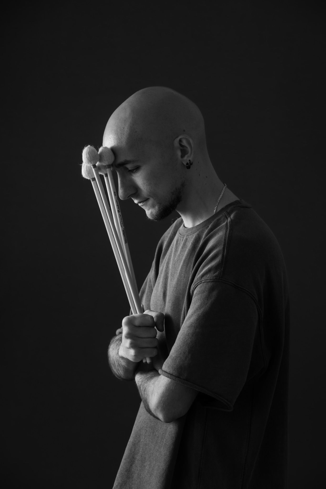

A.MA RECORDS · 2026 — SMASHIN PRODUCTION
AWAKENINGS
Un viaggio attraverso la memoria, la trasformazione interiore e il risveglio.
Formazione e crediti
Jordan Corda Vibrafono · Composizioni
Luca Mannutza Pianoforte
Paolo Recchia Sassofono contralto
Daniele Sorrentino Contrabbasso
Sasha Mashin Batteria · Produzione
EtichettaA.MA Records · 2026
LA STORIA DIETRO IL SUONO
Dodici tracce in un flusso narrativo: memoria, distacco, trasformazione. Il jazz contemporaneo incontra i suoni della vita urbana e la voce ancestrale del canto a tenore sardo.
Con il quintetto e la partecipazione dei Tenori di Santu Larettu di Silanus.
Stampa
Discografia
Registrazioni selezionate